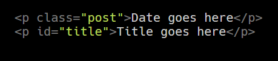
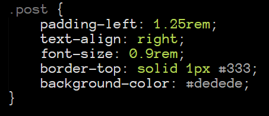
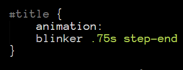

Best practice: "Class" and "id"
This topic will illustrate the best practices of the class and id attributes - when and how to use them. CSS is a ruleset where certain elements will have precedence over others, hence the name "Cascading style sheets". An element defined with an id attribute will take precedence over the class attribute.
Classes are a method for selecting multiple HTML elements and applying style properties across them all. Javascript and CSS can use these classes to manipulate more HTML elements at once. This offers you more flexibility, as you can have multiple HTML elements with the same class name. The id attribute is a method for selecting individual HTML elements. This is when you want to manipulate one specific element. These must have a unique name.
Inside your HTML file you can create your elements that you want to manipulate. Here is an example of the usage of class and id inside html.

Example of class and id in HTML
Now that your class and id are defined in your HTML file, you can reference them inside your CSS file. The class element is defined in CSS with a period (.) before the name of the class.

Example of a "class" selector
And if you want to select a unique element. Say you are making your own 'like' button on your next big social media networking site - you add a # to the selector.

Example of an "id" selector
Feb 2021
Learning Reflections
Long-term goals
One of my long term goals is to become a full stack developer. I want to start as a humble junior developer and learn standing on the shoulders of giants - those with more experience than me.
Skills to develop
I want to become proficient and confident using Javascript and Python. Broaden my knowledge of languages and tools in the web development sphere. As for human related skills, I need to not be afraid to ask for help, and realise that this will be a team effort at times especially in pair programming.
Strengths and limitations
I believe my strengths are: confidence and a daring attitude to trying new things. Being organised, punctual and helping other people. Some things I can work on - not being afraid to ask for help when I'm stuck. Creating plans and most importantly sticking to them. I have a tendancy to rely too much on my intuition
My commitment
In my journey I will commit to using all the resources available to seek help. Facilitators, other students, google and stack overflow. That is not without giving my all in tackling the problem myself first. I am 100% committed to working full time during the weekdays and extra on the weekends.
Expectations
I expect from the facilitators that I will get 1:1 time with them, with an open channel available to share my questions or concerns with. With the understanding that in Bootcamp time I am learning remotely, so without the advantage attending on campus.
Other commitments
No other commitments at the moment, I schedule other stuff for after typical working hours or in the weekends.
Feb 2021